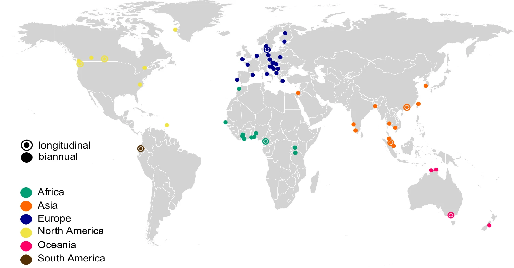

European Urban Wastewater Virome Surveillance Dataset
VEO consortium partners (multi-city surveillance network)
This dataset (ENA accession PRJEB87273) contains integrated wastewater metagenomic sequencing data collected across multiple European surveillance sites. It includes microbial community profiles, antimicrobial resistance gene (ARG) detection, and metagenome-assembled genomes (MAGs), combined with spatial and temporal metadata. The dataset enables comparative analysis of pathogen circulation, resistome dynamics, and environmental drivers of infectious disease emergence in urban wastewater systems. It supports One Health surveillance approaches linking environmental, genomic, and epidemiological data streams.

Conceptual overview of integrated sewage metagenomics surveillance pipeline (VEO framework).